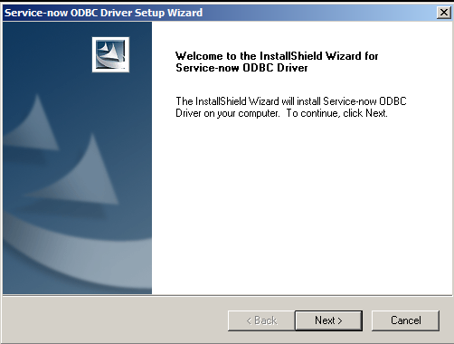
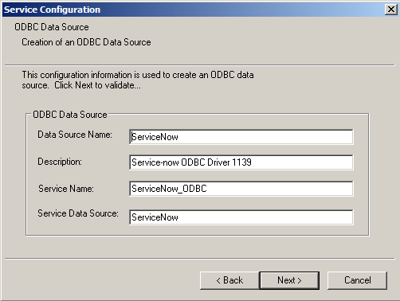
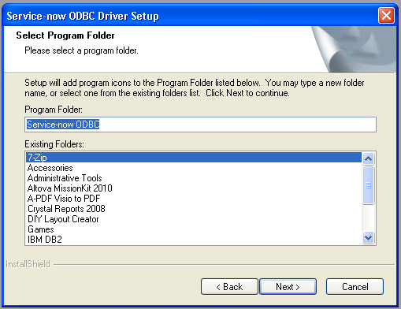
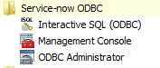
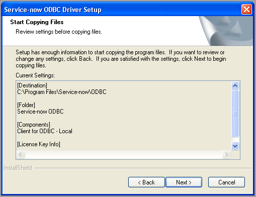

Installing the ODBC Driver
| |
Note: This article applies to Fuji and earlier releases. For more current information, see ODBC Driver at http://docs.servicenow.com
The ServiceNow Wiki is no longer being updated. Visit http://docs.servicenow.com for the latest product documentation. |
Contents
1 Overview
You can install the ServiceNow ODBC driver on Microsoft Windows computers. To install the ODBC driver, set up an ODBC user in your ServiceNow instance, then download and install the ODBC driver. If you already have the ODBC driver installed, you can upgrade to the newest version.
2 Requirements
Ensure your configuration meets these requirements before installing the ODBC driver.
| Category | Requirement | ||
|---|---|---|---|
| An active user record | The user record on the instance used to perform the queries.
| ||
| The soap_query role | The user you use to query the database must have the soap_query role if the instance uses the glide.soap.strict_security high security setting.
| ||
| Target Table ACLs | The user you use to query the database must have read access for the tables that you want to query. See Using Access Control Rules to determine what roles and other permissions a table requires. | ||
| Target Table Web Service Access | The table you want to query must allow web service interaction. You can enable web service interaction using the application access settings. | ||
| Operating System | The ServiceNow ODBC driver supports installation on Microsoft Windows operating systems only. See compatible software for a detailed list of supported Microsoft Windows versions.
| ||
| Hardware |
| ||
| Account | The Windows account used for the installation must have local Administrator rights to install an ODBC driver. | ||
| Networking | During usage, the ODBC driver requires HTTPS (port 443) connectivity to the ServiceNow instance. The communication between the ODBC driver and the ServiceNow instance uses standard SOAP web services. | ||
| End User License Agreement | Read the End User License Agreement for the ServiceNow ODBC driver. The EULA is available with the ODBC driver installer. |
2.1 Compatible Software
The following table lists the operating systems and reporting applications compatible with each version of the ODBC driver.
| Driver Version | Operating System | Microsoft Excel | Microsoft SQL Server | Crystal Reports | Tableau | Informatica |
|---|---|---|---|---|---|---|
| 1.0.9 and later |
Windows XP SP2 |
2007 |
2008 |
2008 |
8.1 |
Informatica works with all ODBC level-2 compliant drivers. The ServiceNow ODBC Driver provides only basic-level compliance for Informatica. Use the ODBC Driver with Informatica only for simple operations. Thoroughly test integrations with Informatica before using them in a production environment. |
| 1.0.8 and earlier |
Windows XP SP2 |
8.1 |
3 Creating an ODBC User
All ODBC queries must be performed as a ServiceNow user. This user must have the soap role and any other roles that are required to read the tables you want to query. An administrator can create a user within the ServiceNow instance for ODBC queries:
- Create a new user.
- Give the new user the soap role.
- Give the user any roles needed to view records on the tables you want to query.
- You may need to create a role with the appropriate ACLs if one does not already exist.
- It is good practice to grant this user the itil role when querying Task tables.
4 Downloading the ODBC Driver
The ODBC driver is available from the ServiceNow Knowledge Base. If you do not have access to the Knowledge Base, contact your ServiceNow administrator.
If this is the first time the driver is installed, the installer will be in first time installation mode and prompt for the driver to be installed. Install only one version of the ODBC Driver on a computer. If the ODBC driver was previously installed, the installer will be in upgrade mode and prompt for removal of the previous driver first.
5 Installing the ODBC Driver
To install the ODBC driver for the first time:
- Right-click the executable and select Run as Administrator to launch the installer.
- You are presented with the following InstallShield dialog box.
- 
- Click Next.
- Read and accept the End User License Agreement.
- Select the target directory for installing the ServiceNow ODBC driver.
- The default directory is C:\Program Files\Service-now\ODBC.
- Specify the following parameters, which are required to create an ODBC data source that can be used to create a DSN.
- Data Source Name: a short name to identify this data source.
- Description: a short description of the driver. The driver's version number is appended at the end of this value.
- Service Name: the name that can be selected in the Service Name field of the ODBC Administrator.
- Service Data Source: the name that can be selected in the Service Data Source field of the ODBC Administrator.
- Usually the default values are appropriate.
- 
- Select the Program Folder to create links for the driver. This is the program folder that appears under the Start menu.
- 
- The installation creates the following links in the menu.
- Interactive SQL (ODBC): an interactive SQL command window for directly testing SQL statements.
- Management Console: a Microsoft MMC snap-in for configuring default properties for the ODBC driver.
- ODBC Administrator: a Microsoft ODBC Administrator program.
- 
- The driver code is copied to the target folder.
- 
- A progress bar appears.
- When prompted, click Finish to complete the installation.
{kind=link}
{kind=link}
{kind=link}
{kind=link}
{kind=link}
6 Upgrading the ODBC Driver
If you have previously installed an older version of the ODBC driver, run the installer to uninstall the previous version, and then run the installer again to upgrade.
6.1 Checking the ODBC Driver Version
To check the build date and time of the ODBC driver, use CheckVersion located in the Service-Now\ODBC\ip\tools folder. This is an executable Windows host script that reports the build date and time of the current ODBC driver. Use it to assist ServiceNow Technical Support to determine which build of the ODBC driver is running. If the CheckVersion tool is absent, the ODBC driver is out of date; upgrade to the current version. To check the version of an older ODBC driver, see the previous version information.
| |
Note: The ODBC installation also has a Service-Now\ODBC\tools folder, which is not the correct path for the CheckVersion tool. |
| Click the plus for previous version information |
|---|
|
To find the version of an installed ODBC driver, prior to version 1.0.7.1:
|
6.2 Uninstalling the ODBC Driver
- Right-click the executable and select Run as Administrator.
- Click OK when prompted to uninstall the current driver, which is required for the upgrade.
- A list appears, displaying the existing ODBC DSN names that you have previously created. You have the option to delete them.
- Select Yes to remove all previous DSNs or No to keep them for use with the upgraded driver.
- An ODBC DSN is a connection handle to use the ODBC driver in an application. For more information from Microsoft, see:
- After removing the previous ODBC driver, double-click the executable again to run the installer. Then, follow the steps in Installing the ODBC Driver.
{kind=link}
{kind=link}
If you encounter errors when uninstalling the ODBC driver, refer to the troubleshooting uninstalling ODBC knowledge article.
7 Configuring the ODBC Driver
After installing the ODBC driver, configure it to connect to your ServiceNow instance.